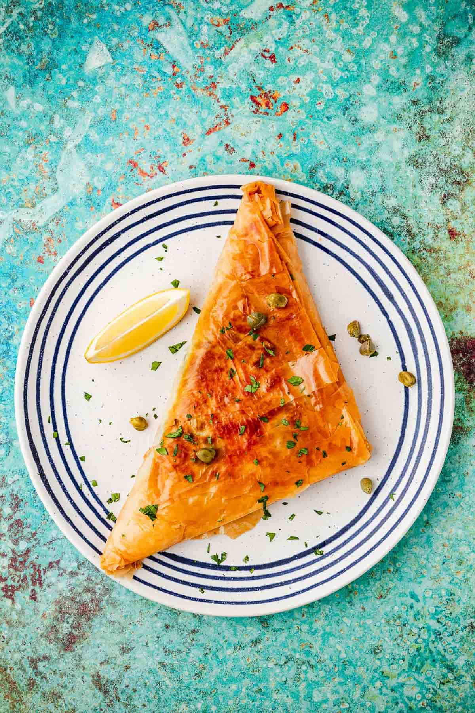

Tunisian Brik

Description
Tunisian Brik is a delicious and crispy pastry, usually filled with egg,
tuna, capers, and parsley, then deep-fried to golden perfection. It's a
classic street food and is often served during Ramadan. Simple, tasty, and
packed with flavor!
Ingredients
- 4 sheets of malsouka (brik) pastry
- 4 eggs
- 1 can of tuna (in oil or water)
- 2 tablespoons chopped parsley
- 1 tablespoon capers (optional)
- Salt and pepper to taste
- Oil for frying
Steps
- Heat oil in a frying pan over medium heat.
- Place one sheet of brik on a flat surface.
- Add a spoonful of tuna, parsley, and capers in the center.
-
Crack an egg on top of the filling and season with salt and pepper.
-
Carefully fold the pastry into a triangle or half-moon shape, sealing
the edges.
-
Gently slide the brik into the hot oil and fry until golden and crispy
(about 2 minutes each side).
- Remove and place on paper towel to drain excess oil. Serve hot.